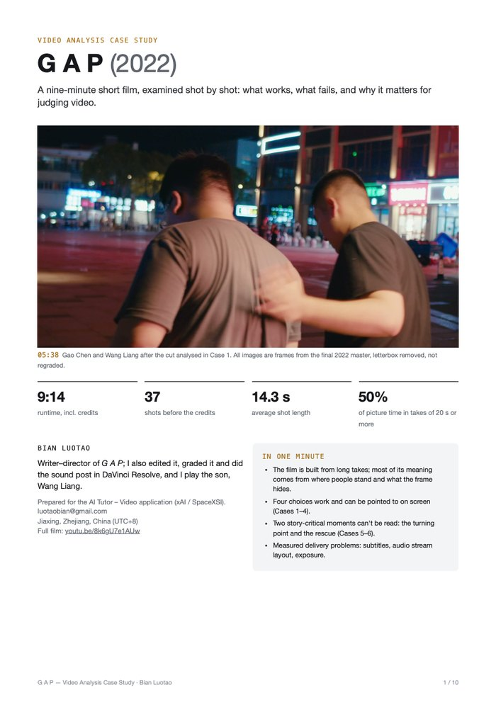
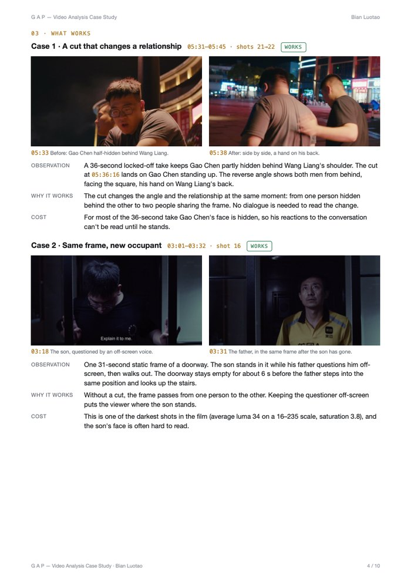
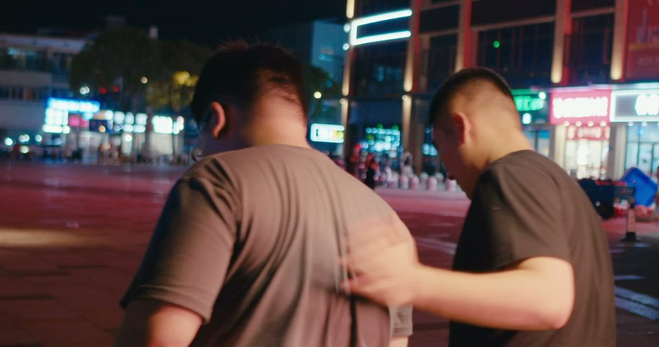
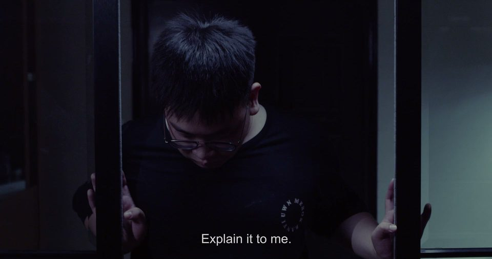
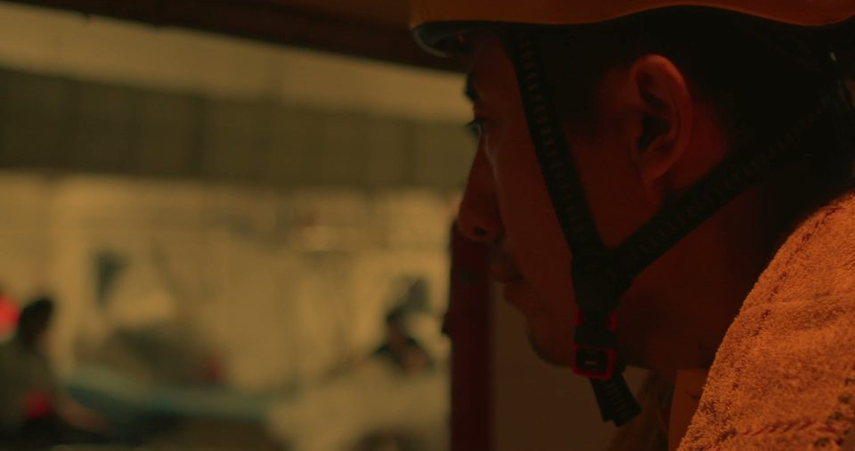
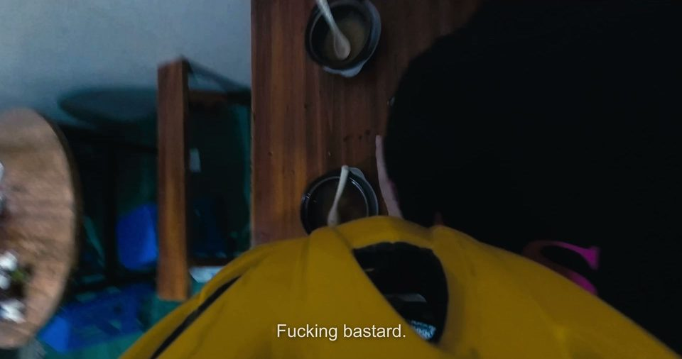

I wrote and directed G A P (2022), edited, graded and mixed it in DaVinci Resolve, and play the son, Wang Liang. Here I review it the way I would review any video: timecoded evidence, impact and fix.
Analysis reel · 1:59 · 1080p. The film plays on the left with timed notes and verdicts on the right; source timecode and a colour script run along the bottom.


Four choices that work, two that fail, colour, sound and subtitle QA, and how it applies to AI video evaluation.

The cut lands as Gao Chen stands up. One man half-hidden behind the other becomes two people side by side, a hand on a back. One cut changes the angle and the relationship at once.

One 31-second static frame: the son is questioned by an off-screen voice and leaves; the father steps into the same place. Cost: the shot is so dark (average luma 34 on 16–235) that the son's face is often lost.

The story turns on what the father sees, but focus never leaves him; the figures behind him never sharpen. Fix at the shoot: a focus pull or a POV insert.

The camera travels with the father's helmet, and the fight spins with it. The idea has a reason, but who hits whom can't be identified. Keep 2–3 s of the spin, then hold one stable angle on the action.
Filmmaker based in Jiaxing, China. After a university foundation year at Kaplan International College London, I studied film at the University of Essex (2024–25) but did not complete the degree. DaVinci Resolve (Edit, Color, Fairlight) is my main tool. I'm looking for part-time remote work evaluating video for AI models, in the evenings and at weekends (UTC+8).
All footage comes from the final 2022 master (8-bit, burned-in English subtitles). The camera originals and the Resolve project no longer exist, so nothing here is a before/after grade. The analysis reel and case study were assembled with AI-assisted measurement and layout tools; the judgements are my own.
| Writer, director | Bian Luotao |
| Editing, colour, sound post | Bian Luotao (not listed in the end credits) |
| The son, Wang Liang | Bian Luotao |
| Producer | Guo Qiancheng |
| Cinematography | Yu Yin |
| Sound recording | Lai Chengxi |
| Lighting | Meng Wei |
| Principal cast | Bian Luotao, Xu Huan, Chai Renjie, Nie Changling |